4. Funcionalidades¶
Las funcionalidades principales de la aplicación son:
4.1. Abrir UML Editor¶
UML Editor es una herramienta que permite generar modelos conceptuales utilizando el lenguaje de modelado unificado (UML) y además funciona como puente entre el lenguaje de modelado y el lenguaje Interlis por medio de su interfaz intuitiva y fácil de usar.
Para poder usarla se deben realizar los siguientes pasos:
- Seleccionar la opción «Abrir UML Editor» en el menú de funcionalidades principales y hacer clic en el botón «Siguiente» ubicado en la sección de botones de navegación

En la pantalla mostrada por la aplicación se verá la versión de UML Editor a ejecutar, así como la versión del lenguaje Interlis y la versión del compilador que esta utiliza.
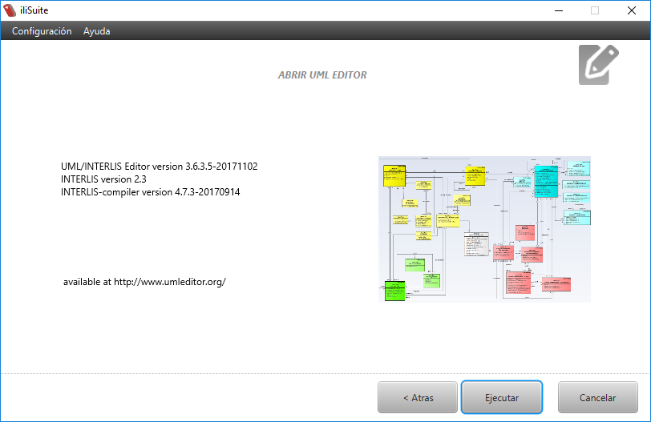
- Hacer clic en el botón «Ejecutar» ubicado en la sección de botones de navegación
Esto ejecutará la herramienta UML Editor sin necesidad de instalar algo más
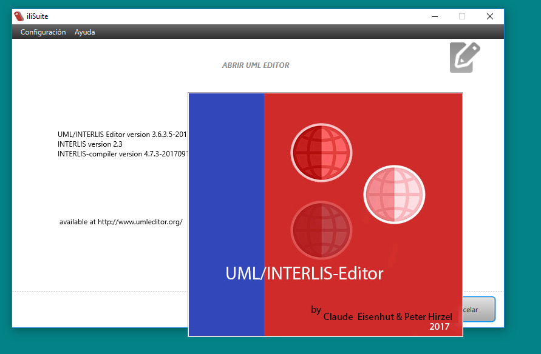
4.2. Generar modelo físico¶
Esta funcionalidad permite crear un esquema físico de base de datos a partir de un modelo Interlis. La aplicación permite seleccionar el motor de base de datos y las opciones de mapeo del modelo en la base de datos.
Para generar el modelo físico se deben realizar los siguientes pasos:
- Seleccionar la opción «Generar modelo físico» en el menú de funcionalidades principales y hacer clic en el botón «Siguiente» ubicado en la sección de botones de navegación

La aplicación mostrará las diferentes opciones de motor de base de datos disponibles para ejecutar la acción.
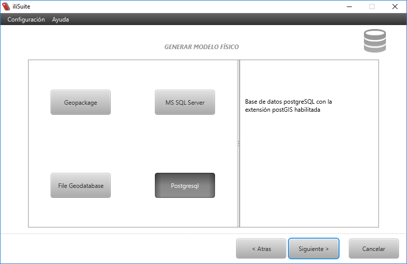
- Seleccionar el motor de base de datos deseado. La aplicación mostrará observaciones a tener en cuenta sobre el motor seleccionado como, por ejemplo, la versión. Hacer clic en el botón «Siguiente».
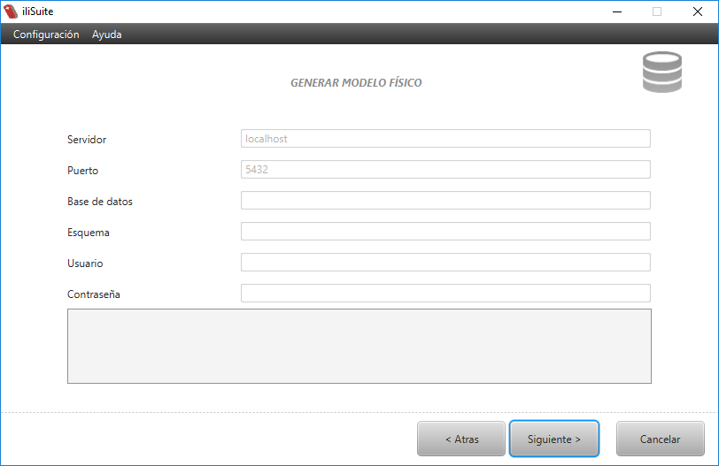La aplicación mostrará un formulario para ingresar los datos de conexión a la base de datos. Este formulario es diferente para cada motor de base de datos y por lo tanto depende de la opción seleccionada en el paso anterior.
- Diligenciar los datos de conexión en el formulario, teniendo en cuenta que la base de datos debe existir, y hacer clic en el botón «Siguiente».

Nota
El formulario puede tener algunos campos con valores en color gris. Esto significa que éste será el valor predeterminado del campo en caso de no ingresar valor en él.
Nota
Los campos obligatorios se marcarán en rojo en caso de no ser diligenciados.
Importante
En caso de no ser exitosa la conexión se podrá ver el error en la consola de eventos ubicada en la parte inferior de la pantalla de la aplicación
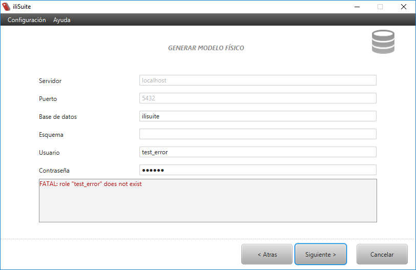
- Diligenciar los parámetros para la generación del modelo físico, teniendo en cuenta lo siguiente:
- Ruta del archivo Interlis (en formato .ili): Ruta del archivo que contiene el modelo con base en el cual se va a generar el esquema de base de datos. Para diligenciar la ruta del archivo Interlis se debe hacer clic el botón «Examinar» correspondiente y seleccionar el archivo usando el diálogo de selección de archivos que es desplegado.
- Repositorios de modelos: Rutas de las carpetas, o URLs, que contienen los archivos Interlis con los modelos que referencia el modelo con el cual se va a generar el esquema de base de datos. Hacer clic en el botón «Examinar» correspondiente, lo cual despliega el Cuadro de diálogo repositorio de modelos. En caso de haber agregado repositorios previamente por medio del Menú Configuración, el repositorio de modelos tendrá estos valores diligenciados.
- Opciones de generación de la base de datos: Entre las que se encuentran las opciones de mapeo, opciones de definición de datos y opciones de metainformación. Para diligenciar las opciones de generación de la base de datos, es necesario seleccionar las opciones deseadas en cada una de las secciones.
Para información detallada ver: Opciones de generación de modelo físico.

Nota
Al mantener el cursor sobre cada opción aparece un tooltip con información de la opción correspondiente.
Para continuar haga clic en «Siguiente».
- Revisar el comando de ejecución (generado de acuerdo a las opciones elegidas en los pasos anteriores) y, en caso de estar correcto, hacer clic en el botón «Ejecutar».

La aplicación mostrará el estado de la ejecución de los comandos e indicará si tuvo éxito.
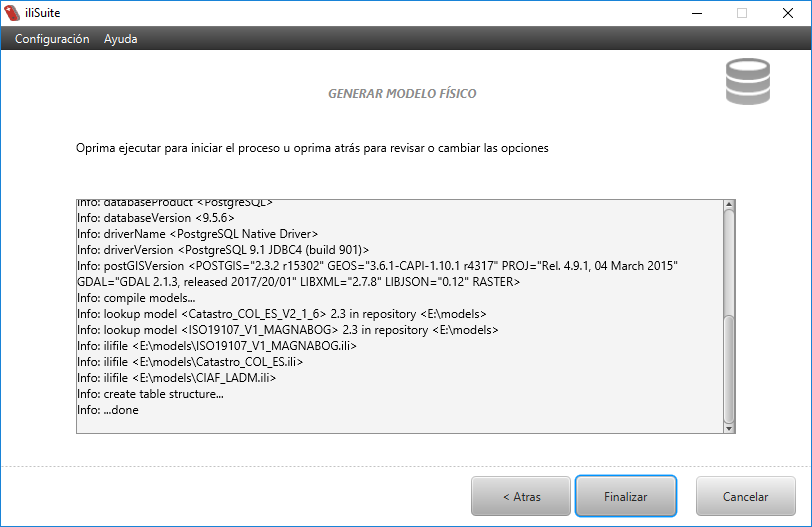Importante
La aplicación muestra en la consola de eventos el estado de la ejecución del comando. Por lo tanto, si se presenta alguna inconsistencia, esta se mostrará en la consola.
4.3. Importar o modificar datos¶
Esta funcionalidad permite realizar 2 operaciones:
- Importar datos dentro de una base de datos (previamente creada usando la herramienta de generación de modelo físico) a partir de un archivo de intercambio de datos Interlis (xtf). Estos datos pueden agregarse como nuevos en la base de datos, o tambien pueden reemplazar o actualizar datos ya existentes.
- Eliminar datos existentes en la base de datos.
Para poder importar o modificar datos se deben realizar los siguientes pasos:
- Seleccionar la opción «Importar o modificar datos» en el menú de funcionalidades principales y hacer clic en el botón «Siguiente» ubicado en la sección de botones de navegación

- Seleccionar el motor de base de datos deseado. La aplicación mostrará observaciones a tener en cuenta sobre el motor seleccionado como, por ejemplo, la versión. Hacer clic en el botón «Siguiente».

La aplicación mostrará un formulario para ingresar los datos de conexión a la base de datos. Este formulario es diferente para cada motor de base de datos y por lo tanto depende de la opción seleccionada en el paso anterior.

- Diligenciar los datos de conexión en el formulario y hacer clic en el botón «Siguiente»
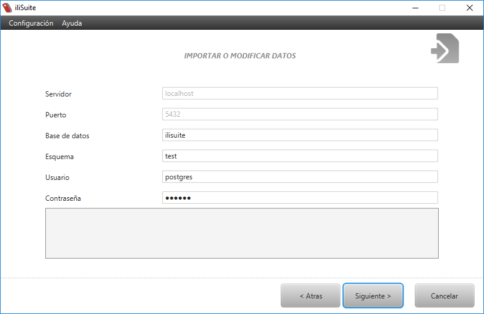
Nota
El formulario puede tener algunos campos con valores en color gris. Esto significa que éste será el valor predeterminado del campo en caso de no ingresar valor en él.
Nota
Los campos obligatorios se marcarán en rojo en caso de no ser diligenciados.
Importante
En caso de no ser exitosa la conexión se podrá ver el error en la consola de eventos ubicada en la parte inferior de la pantalla de la aplicación

- La aplicación mostrará la pantalla de ingreso de parametros para la importación o modificación de datos dentro de la base de datos, los cuales son:

- La ruta del archivo de transferencia de datos (en formato .xtf) que contiene los datos a ser importados.
- Repositorios de modelos, en donde se definen las rutas de las carpetas, o URLs, que contienen los archivos Interlis con los modelos base del xtf a importar.
- Las opciones de importación o modificación de datos, entre las que se encuentran la acción a realizar y las opciones de validación que son realizadas a los datos al momento de importar.
Para información detallada ver: Opciones de importar o modificar datos
- Finalmente, se mostrará el comando que se ejecutará de acuerdo a las opciones elegidas en los pasos anteriores. Si los parámetros son correctos, hacer clic en el botón «Ejecutar».
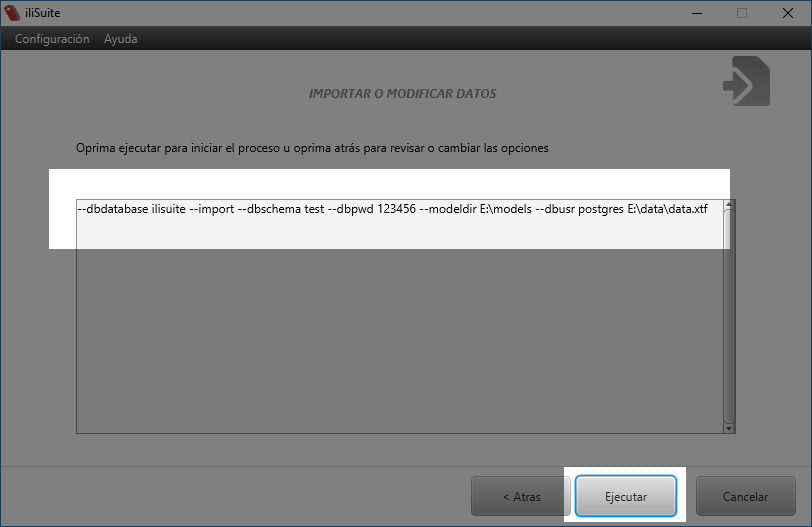La aplicación mostrará el estado de la ejecución de los comandos e indicará si tuvo éxito.
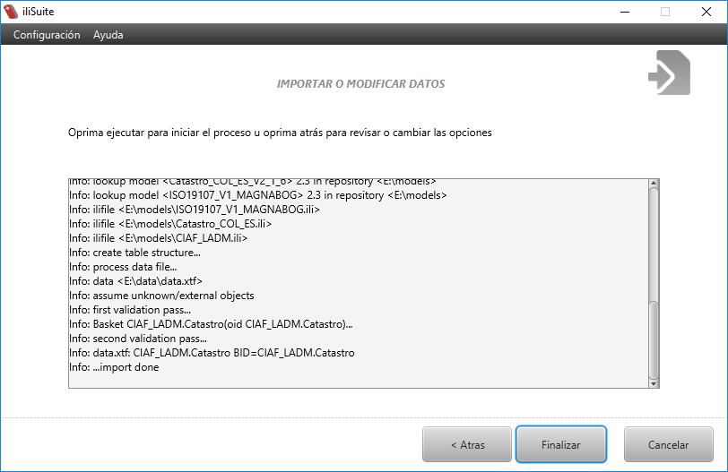
Importante
La aplicación muestra en la consola de eventos el estado de la ejecución del comando. Por lo tanto, si se presenta alguna inconsistencia, esta se mostrará en la consola.
4.4. Validar datos¶
Esta funcionalidad permite verificar que los datos de un archivo de transferencia de Interlis (.itf o .xtf) sean validos de acuerdo a un determinado modelo de Interlis (.ili). La aplicación permite seleccionar las opciones de validación y de registro de eventos (log).
Para validar datos se deben realizar los siguientes pasos:
- Seleccionar la opción «Validar datos» en el menú de funcionalidades principales y hacer clic en el botón «Siguiente» ubicado en la sección de botones de navegación

{kind=link}
- Diligenciar los parametros de validación de datos, los cuales son los siguientes:

- Ruta del archivo de datos (en formato .xtf): Ruta del archivo de transferencia de Interlis que contiene los datos que serán validados. Para diligenciar la ruta del archivo de datos se debe hacer clic el botón «Examinar» correspondiente y seleccionar el archivo usando el diálogo de selección de archivos que es desplegado.
- Repositorio de modelos: Rutas de las carpetas, o URLs, que contienen los archivos Interlis (.ili) con los modelos de referencia con base en los cuales se va a validar el archivo de transferencia de datos. Para diligenciar el repositorio de modelos se debe hacer clic en el botón «Examinar» correspondiente, lo cual despliega el Cuadro de diálogo repositorio de modelos. En caso de haber agregado repositorios previamente por medio del Menú Configuración, el repositorio de modelos tendrá estos valores diligenciados.
- Opciones de validación de datos: Permite seleccionar las opciones de validación y registro de eventos.
Para información detallada ver: Opciones para validar datos.
Nota
Al mantener el cursor sobre cada opción aparece un tooltip con información de la opción correspondiente.
Para continuar haga clic en «Siguiente».
- Revisar el comando de ejecución (generado de acuerdo a las opciones elegidas en los pasos anteriores) y, en caso de ser correcto, hacer clic en el botón «Ejecutar».
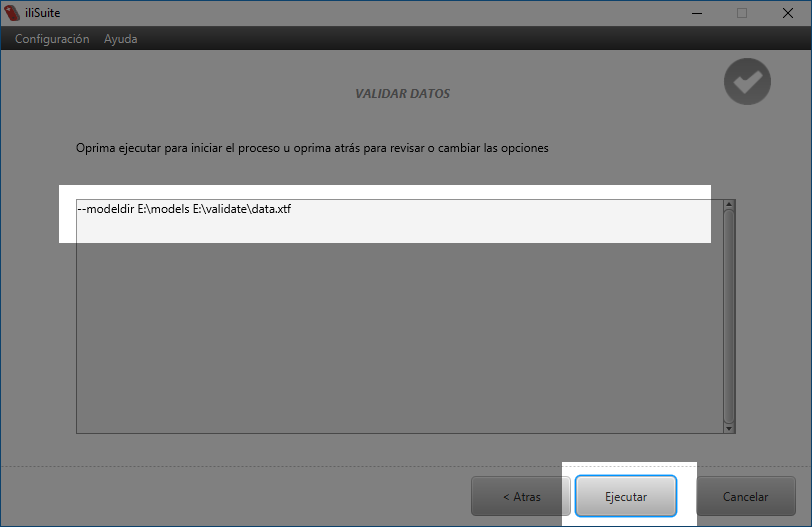La aplicación mostrará el estado de la ejecución y los mensajes de validación correspondientes
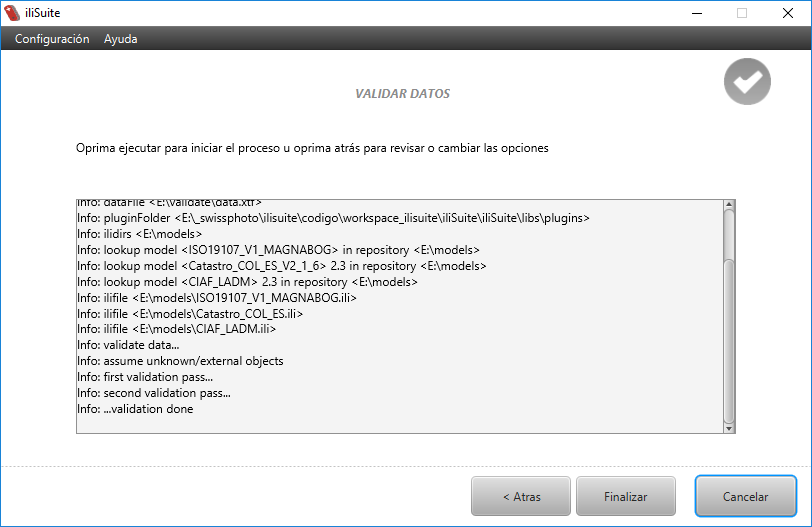Nota
En caso de haber seleccionado alguna opción de generación de registro de eventos en archivo, la ejecución del comando generará de manera adicional el archivo que contiene el resultado de la validación.
4.5. Exportar datos¶
Esta opción permite exportar datos de la base de datos a un archivo de intercambio de Interlis (xtf).
Para poder exportar datos se deben realizar los siguientes pasos:
- Seleccionar la opción «Exportar datos» en el menú de funcionalidades principales y hacer clic en el botón «Siguiente» ubicado en la sección de botones de navegación

La aplicación mostrará las diferentes opciones de motor de base de datos disponibles para ejecutar la acción.

- Seleccionar el motor de base de datos deseado. La aplicación mostrará observaciones a tener en cuenta sobre el motor seleccionado. Hacer clic en el botón Siguiente.
La aplicación mostrará un formulario para ingresar los datos de conexión a la base de datos. Este formulario es diferente para cada motor de base de datos y por lo tanto depende de la opción seleccionada en el paso anterior.
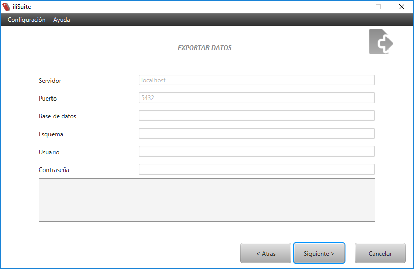
- Diligenciar los datos de conexión en el formulario y hacer clic en el botón «Siguiente».

Nota
El formulario puede tener algunos campos con valores en color gris. Esto significa que éste será el valor predeterminado del campo en caso de no ingresar valor en él.
Nota
Los campos obligatorios se marcarán en rojo en caso de no ser diligenciados.
Importante
En caso de no ser exitosa la conexión se podrá ver el error en la consola de eventos ubicada en la parte inferior de la pantalla de la aplicación
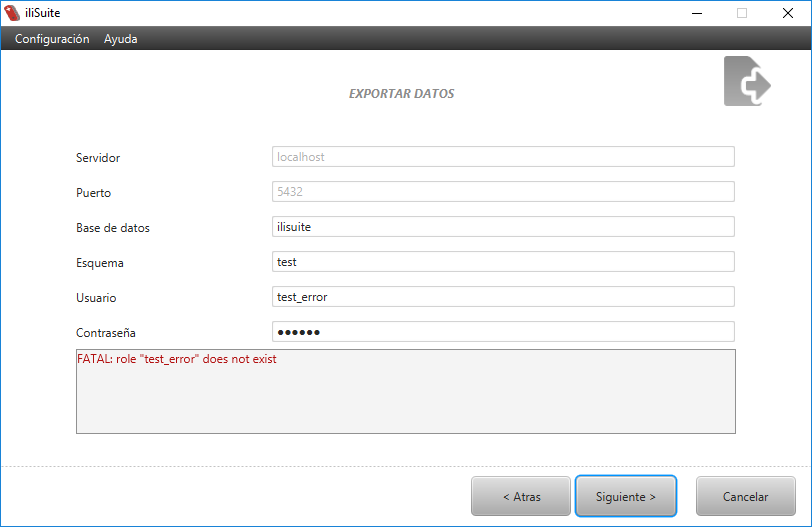
{kind=link}
- Diligenciar los parámetros para gestionar los datos a exportar teniendo en cuenta lo siguiente:

El nombre y la ruta del archivo de transferencia Interlis (xls) en el que se exportan los datos. Para diligenciar la ruta del archivo de intercambio se debe hacer clic en el botón «Examinar» correspondiente y especificar nombre del archivo xtf y su ubicación.
Repositorios de modelos, en donde se definen las rutas de las carpetas, o URLs, que contienen los archivos Interlis con los modelos que referencia el modelo con el cual se generó el esquema de base de datos. Hacer clic en el botón «Examinar» correspondiente, lo cual despliega el Cuadro de diálogo repositorio de modelos. En caso de haber agregado repositorios previamente por medio del Menú Configuración, el repositorio de modelos tendrá estos valores diligenciados.
El alcance de los datos a exportar: dataset, topics, baskets y models. Algunos alcances pueden estar desactivados. Esto depende de las opciones con las que se generó el esquema de la base de datos. Seleccionar un tipo de alcance de los datos a exportar y hacer clic en el botón agregar. Aparecerá un cuadro de diálogo con los valores disponibles para el respectivo alcance.
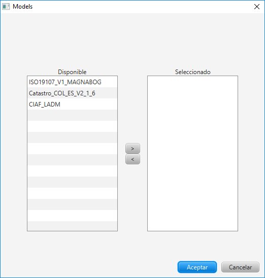Para más información ver: Alcances y Generar modelo físico.
{kind=link}
- Revisar el comando de ejecución (generado de acuerdo a las opciones elegidas en los pasos anteriores) y, en caso de ser correcto, hacer clic en el botón «Ejecutar».

La aplicación mostrará el estado de la ejecución de los comandos e indicará si tuvo éxito.
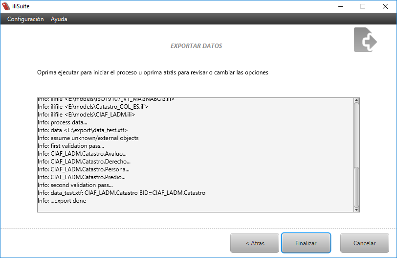Importante
La aplicación muestra en la consola de eventos el estado de la ejecución del comando. Por lo tanto, si se presenta alguna inconsistencia, esta se mostrará en la consola.